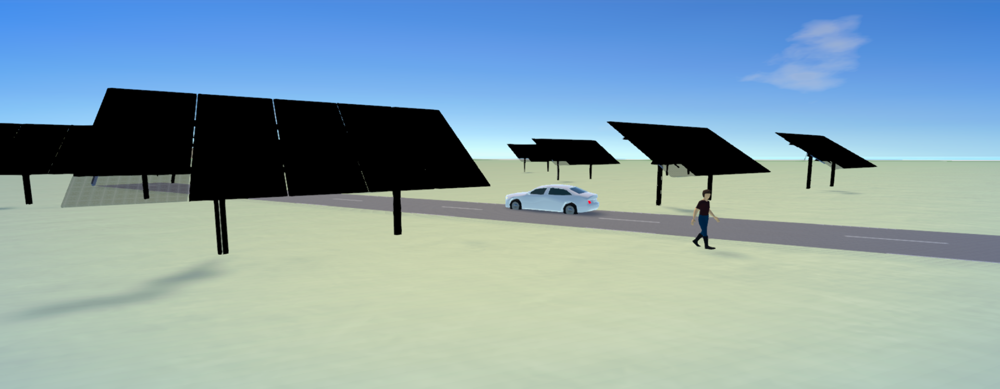
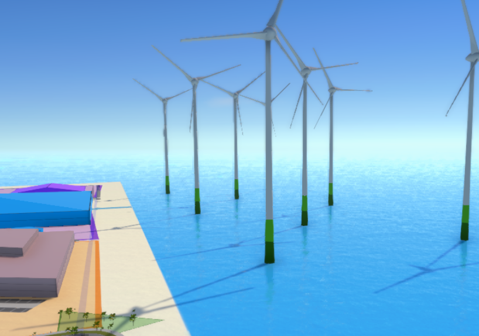
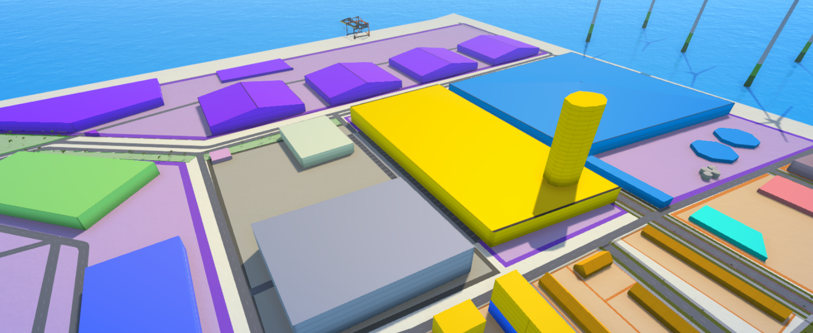

Sustainable Resources of Energy
Solar Energy
- Solar photovoltaic technology → Converts sunlight directly into electricity to power homes and businesses.
- Passive solar technology → Provides light and harnesses heat from the sun to warm homes and businesses in winter.
- Solar water heating → Harnesses heat from the sun to provide hot water for homes and businesses.
- Solar process heat → Uses solar energy to heat or cool commercial and industrial buildings.
- Concentrating solar power → Harnesses heat from the sun to provide electricity for large power stations.
Advantages
- Renewable and sustainable
- Low maintenance costs
- Job creation (solar industry creates employment opportunities in manufacturing, installation, and maintenance)
- Scalability and versatility (can be used for small houses, large industries, and remote areas with no grid access)
- Off-grid power supply (good for rural areas where electricity access is limited)
Disadvantages
- Weather dependent
- Costly energy storage
- Requires space
- Not available at night
- Production of energy panels involves energy-intensive processes and the use of hazardous materials
Wind Energy
- Onshore wind energy → Micro-wind energy is harnessed through wind turbines with power lower than 100 KW. They are small-scale structures usually used in isolated areas far from the power grid, such as country houses, nature reserves, or alpine refuges.
- Offshore wind energy → Uses wind turbines installed in the ocean to take advantage of powerful, uninterrupted winds. Offshore wind is more productive than onshore wind due to its consistency.
Advantages
- Renewable and sustainable
- Low maintenance and operational costs
- Energy independence (reduces dependence on imported fuels and enhances a city’s energy security)
- Job creation
- Space efficiency (the ground beneath turbines can be used for farming or livestock grazing)
- Offshore potential (can be placed in the ocean, reducing land use)
Disadvantages
- Intermittent energy source (wind is not constant)
- Noise and aesthetic impact
- Can harm birds and bats
- Needs a stable grid and energy storage solutions to manage fluctuations
Geothermal Energy
Geothermal technology extracts heat from within the subsurface of the Earth, which can be used directly for heating and cooling or converted into electricity.
Advantages
- Renewable and sustainable
- Available 24/7 regardless of weather conditions
- Low operating costs
- Efficient land use – Geothermal power plants require less land compared to solar or wind farms
- Versatile applications – Can be used for electricity generation, heating, cooling, and industrial processes
- Long lifespan
- Energy independence – Reduces reliance on imported fuels, improving national energy security
Disadvantages
- Location-specific – Only viable in areas with high underground heat, such as volcanic or tectonic zones
- Environmental risks – Drilling can release toxic gases (like hydrogen sulfide) and may cause earthquakes
- Limited scalability – Not all regions have access to high-temperature geothermal reservoirs
- Potential resource depletion – If not properly managed, geothermal reservoirs can cool down over time
- Infrastructure challenges – Requires specialized drilling equipment and technology
- Water usage – Some geothermal systems require significant amounts of water


